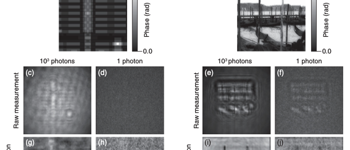

Publications & Patents
High-Resolution limited-angle phase tomography of dense layered objects using deep neural networks
Paper | PNAS
In this work, we used machine learning based method to perform tomography on dense layered objects. The projection range was higly limited, ± 10°, and we showed that performance was maintain under low illumination. Our goal was to image integrated circuits (IC), and experimentally verified our method with an optically up-scaled setup. Rather than the typical approach of phase projection followed by 3-dimensional reconstruction, we used a single step method to reconstruct the 3-dimensional volume. We used a physics-informed prprocess step, in order to incorporate rigorous physical understanding to an otherwise end-to-end, black-box approach. We also showed the effectiveness of training in simulation, while testing in experimentation. A typical issue with deep learning is the prohibitive sizes of training data. In the case of physical projects, such as reconstructing the interior of integrated circuits, one would have to image several thousands of sample ICs. Our method still produced high fidelity reconstructions with this synthetic data. This project was supported by Intelligence Advanced Research Projects Activity (IARPA) No. FA8650-17-C-9113 and Singapore-MIT Alliance for Research and Technology (SMART) Grant No. 015824-00169.

Image Forensics and Scene Text Recognition
Research | Sponsor: Weichai
Worked on a research project with the large manufacturing company Weichai, to detect fake and doctored images. Machine learning algorithms we developed were implemented and tested on their massive image database. We also implemented scene text recognition models, to extract license plate, odometer readings and serial numbers from various images in adverse imaging conditions such as blur, glare, and darkness.
Computer-implmemented Apparatus and Methods for Analyzing Milk
Provisional Patent | USPTO: 63/307,461
Patent for UV-VIS analysis of milk, utilzing attenuation and fluorescence.
Low Photon Count Phase Retrieval Using Deep Learning
Paper | PhysRevLett
We experimentally demonstrate the effectiveness of our physics-informed deep neural network in the phase retrieval problem under extremely low photon counts. Compared with classical iterative approaches such as the Gerchberg-Saxton Algorithm, our method still maintains performance under conditions as low as 1 photon per pixel on average. Rather than the typical mean squared error, we used negative Pearson correlation coefficient (NPCC) as our loss function, as previous work from our group showed the effectiveness of this metric. We also used a physical preprocess step, as means to incorporate physical knowledge into the learning scheme. Imaging under such noisy conditions are particularly important when one has a limited imaging time or strict photon budget. The second case of strict photon budget, is often seen in the medical field. In X-ray imaging for example, there are maximum dosages of radiation a patient can be exposed to at a time. A method that maintains performance when the photon dosage is reduced is thus invaluable. This project was supported by Intelligence Advanced Research Projects Activity (IARPA) No. FA8650-17-C-9113 and Singapore-MIT Alliance for Research and Technology (SMART) Grant No. 015824-00169.
